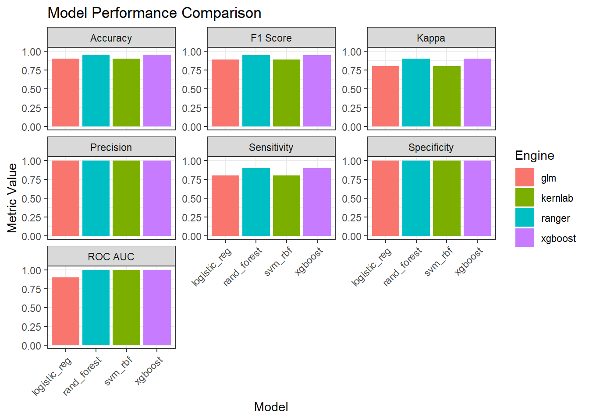
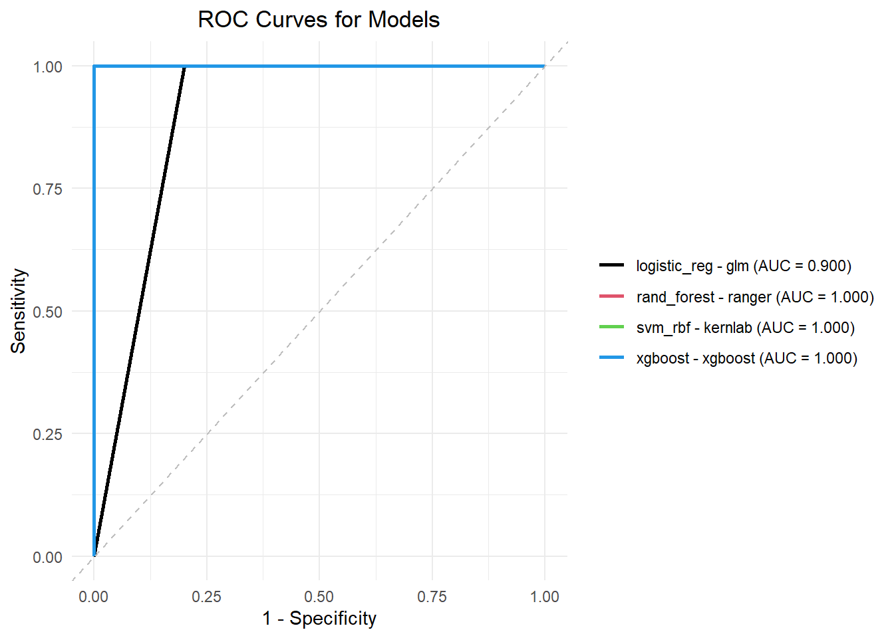
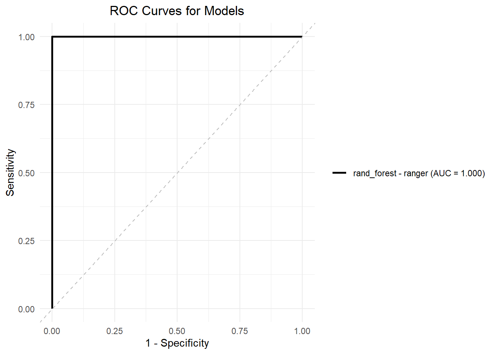
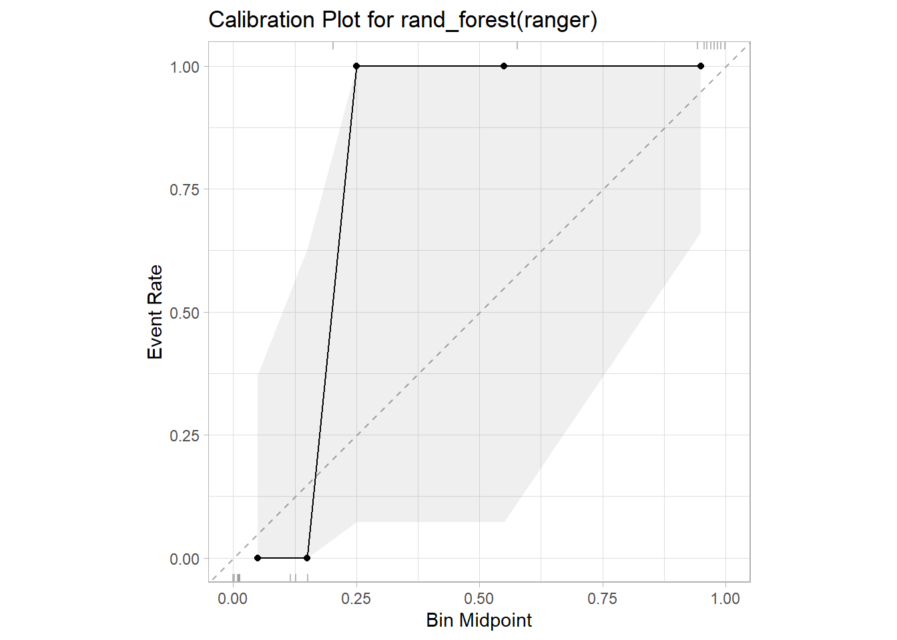
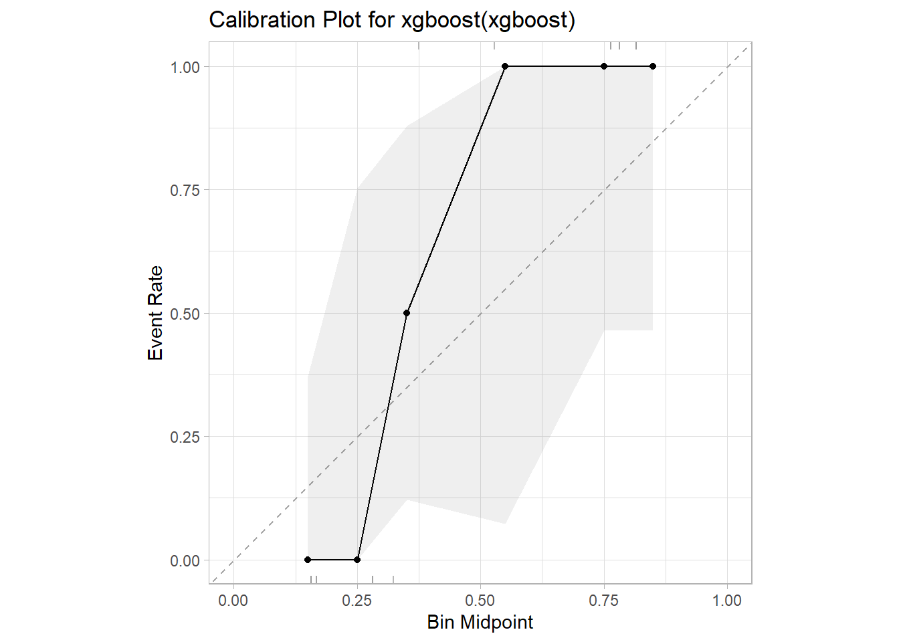
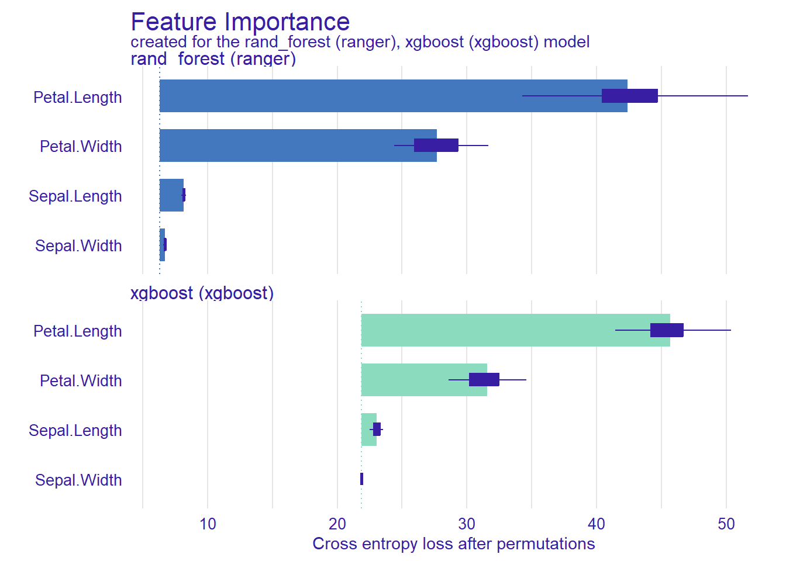
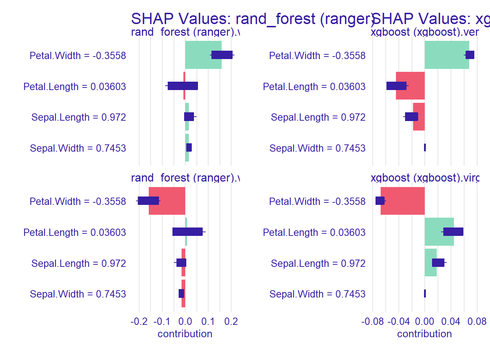

library(fastml)
library(dplyr)Training Classification Models
The fastml() function lies at the heart of the fastml package, providing a unified pipeline for training and evaluating classification models with minimal code. It handles everything from data preprocessing to hyperparameter tuning, cross-validation, and model comparison — all in a single step.
In this tutorial, we’ll walk through a complete binary classification workflow using the iris dataset. You’ll learn how to prepare your data, train multiple models at once, evaluate their performance, and interpret the results. Whether you’re a beginner or an experienced user, this example will show you how to streamline your classification tasks using fastml.
1. Load Packages and Data
We begin by loading the necessary packages: fastml for model training and evaluation, and dplyr for data manipulation.
To keep things simple for this introductory classification tutorial, we’ll use a modified version of the classic iris dataset. Specifically, we’ll filter out the “setosa” species to turn the problem into a binary classification task — predicting whether a sample belongs to versicolor or virginica.
iris_bin <- iris %>%
filter(Species != "setosa") %>%
mutate(Species = factor(Species))
head(iris_bin) Sepal.Length Sepal.Width Petal.Length Petal.Width Species
1 7.0 3.2 4.7 1.4 versicolor
2 6.4 3.2 4.5 1.5 versicolor
3 6.9 3.1 4.9 1.5 versicolor
4 5.5 2.3 4.0 1.3 versicolor
5 6.5 2.8 4.6 1.5 versicolor
6 5.7 2.8 4.5 1.3 versicolorAlthough fastml() supports multi-class classification, we use a binary task here to simplify the initial visualization and performance interpretation. This approach makes it easier to follow the modeling process while still demonstrating the core capabilities of the fastml package.
2. Train Many Models in One Shot
Once your data is ready, training and comparing multiple classification models is as simple as one function call with fastml(). Specify the dataset, the target label, and the algorithms you want to evaluate:
result <- fastml(
data = iris_bin,
label = "Species",
algorithms = c("logistic_reg",
"svm_rbf",
"rand_forest",
"xgboost")
)All major components of a typical machine learning pipeline—data splitting, preprocessing, cross-validation, and hyperparameter tuning—are handled automatically, yet remain fully customizable via function arguments.
What just happened?
| Step | Automated task |
|---|---|
| 1 | Stratified train/test split based on test_size = 0.2 (unless train_data/test_data are provided). |
| 2 | Automatic preprocessing recipe, including dummy-encoding for categorical variables, centering and scaling of numeric predictors, and removal of zero-variance features. |
| 3 | 10-fold cross-validation within the training set usingresampling_method = "cv" and folds = 10. |
| 4 | Model-specific hyperparameter tuning via grid search (or Bayesian optimization if tuning_strategy = "bayes") |
| 5 | Metric collection and model selection, finalizing the best workflow for each algorithm. |
Each component can be adjusted through the arguments of fastml() — for instance, you can specify your own recipe, choose from multiple resampling_method types (e.g., “repeatedcv” or “boot”), and even define custom imputation or summary functions.
By default, if metric is not provided, the function selects a task-appropriate metric such as accuracy for classification or RMSE for regression. The argument task = "auto" intelligently detects whether you’re solving a classification or regression problem.
In the next section, we’ll explore how to compare the trained models using summary() and visualize key performance metrics.
3. Compare Model Performance
After training, you can summarize and compare all models using the summary() function. This gives a clear overview of model performance across a range of evaluation metrics:
summary(result, type = "metrics")
===== fastml Model Summary =====
Task: classification
Number of Models Trained: 4
Best Model(s): rand_forest (ranger) xgboost (xgboost) (accuracy: 0.9500000)
Performance Metrics (Sorted by accuracy ):
------------------------------------------------------------------------------------------------------
Model Engine Accuracy F1 Score Kappa Precision Sensitivity Specificity ROC AUC
------------------------------------------------------------------------------------------------------
rand_forest* ranger 0.9500000 0.9473684 0.9000000 1.0000000 0.9000000 1.0000000 1.0000000
xgboost* xgboost 0.9500000 0.9473684 0.9000000 1.0000000 0.9000000 1.0000000 1.0000000
logistic_reg glm 0.9000000 0.8888889 0.8000000 1.0000000 0.8000000 1.0000000 0.9000000
svm_rbf kernlab 0.9000000 0.8888889 0.8000000 1.0000000 0.8000000 1.0000000 1.0000000
------------------------------------------------------------------------------------------------------
(*Best model)Each row summarizes one model’s performance, including:
Accuracy: Overall classification correctness.
F1 Score: Harmonic mean of precision and recall.
Kappa: Agreement adjusted for chance.
Precision: Proportion of positive predictions that were correct.
Sensitivity (Recall): Ability to identify positive cases.
Specificity: Ability to identify negative cases.
ROC AUC: Area under the ROC curve; a measure of overall discriminative ability.
The best-performing models (based on the selected metric) are marked with an asterisk *. In this case, both rand_forest and xgboost achieved the highest accuracy (0.95), making them the top candidates for deployment or further analysis.
Want to focus on just a few models? You can pass a subset using the algorithm argument in summary().
4. Inspect Tuned Hyperparameters
To understand what made the top-performing models successful, use:
summary(result, type = "params")Best Model hyperparameters:
Model: rand_forest (ranger)
mtry: 2
trees: 500
min_n: 10
Model: xgboost (xgboost)
mtry: 2
trees: 15
min_n: 2
tree_depth: 6
learn_rate: 0.1
loss_reduction: 1
sample_size: 0.5This will display the best hyperparameter values selected during tuning for each model. These settings are critical for optimizing performance and can inform further refinement or deployment.
These values are chosen based on cross-validation performance and reflect the best configuration for each algorithm on your specific dataset. The fastml() function handles this tuning process automatically, but if desired, you can manually set or constrain parameters using the tune_params argument.
5. Confusion Matrix
To evaluate model performance at the prediction level, especially for classification tasks, a confusion matrix offers detailed insight. Use:
summary(result, type = "conf_mat")
===========================
Confusion Matrices by Model
===========================
Model: rand_forest (ranger)
---------------------------
Truth
Prediction versicolor virginica
versicolor 9 0
virginica 1 10
Model: xgboost (xgboost)
---------------------------
Truth
Prediction versicolor virginica
versicolor 9 0
virginica 1 10This displays the confusion matrices for each model, showing how well the predicted classes match the actual ones.
The result suggests both models performed very well on this binary classification task, with minimal confusion between the two classes. For datasets with imbalanced classes or more nuanced distinctions, confusion matrices can help pinpoint which types of errors are most common—false positives, false negatives, or both.
6. Visualize Model Performance
To quickly compare how each model performed across different evaluation metrics, you can use the built-in plot() function with type = "bar":
plot(result, type = "bar")
This generates a faceted bar plot, with one panel per metric (e.g., Accuracy, F1 Score, ROC AUC), and bars representing each model’s score on that metric.
Why it’s useful
Provides a visual overview of strengths and weaknesses across models.
Makes it easy to spot trade-offs (e.g., high accuracy but lower sensitivity).
Highlights top-performing models for each metric.
Each bar is color-coded by model, and the best-performing models stand out immediately. This is especially helpful when evaluating more than just one metric, such as both accuracy and F1 score, which can differ notably in imbalanced datasets.
7. Visualize ROC Curves
To assess the discriminative power of each model in a binary classification task, plot their Receiver Operating Characteristic (ROC) curves using:
plot(result, type = "roc")
This generates a faceted plot showing the ROC curve for each trained model.
What ROC curves show
True Positive Rate (Sensitivity) vs. False Positive Rate (1 - Specificity) across thresholds.
The area under the curve (AUC) indicates overall model performance:
- AUC close to 1.0 suggests excellent discrimination.
-AUC of 0.5 means no better than random guessing.
Why it’s helpful
Useful when dealing with imbalanced data, where accuracy may be misleading.
Allows comparison of how each model balances sensitivity and specificity.
Helps in selecting an optimal probability threshold for classification.
In our example, both rand_forest and xgboost achieved an AUC of 1.0—indicating perfect separation of classes on the test set.
You can also zoom in on specific models using:
plot(result, type = "roc", algorithm = "rand_forest")
8. Visualize Calibration Plots
To evaluate how well your model’s predicted probabilities align with observed outcomes, use a calibration plot:
plot(result, type = "calibration")

A calibration plot compares predicted probabilities to actual event rates. Well-calibrated models produce probabilities that match the true likelihood of outcomes—for example, among all observations predicted with 70% confidence, about 70% should actually belong to the positive class.
What to look for
Diagonal line (ideal calibration): Perfect agreement between predicted and observed probabilities.
Model curves: Deviations from the diagonal indicate overconfidence (curve above the line) or underconfidence (curve below the line).
Rug plots: Tick marks on the x-axis show the distribution of predicted probabilities.
Why it matters
High accuracy doesn’t guarantee good probability estimates. Calibration assesses the reliability of those estimates.
Important for risk prediction, medical diagnosis, or any domain where predicted probabilities are used for decision-making.
For binary classification tasks, calibration plots provide a deeper layer of model evaluation—especially when choosing between equally accurate models.
9. Predictions on New Data
Once you’ve identified the best-performing model, making predictions on new, unseen data is simple and consistent with the predict() function. The fastml package ensures that the appropriate preprocessing steps are automatically applied, so you can focus directly on generating and interpreting the predictions.
As a demonstration, let’s select a few random observations from the binary-classified iris dataset (iris_bin):
new_obs <- iris_bin[-5] %>%
slice_sample(n = 5)
new_obs Sepal.Length Sepal.Width Petal.Length Petal.Width
1 5.5 2.5 4.0 1.3
2 6.5 3.0 5.5 1.8
3 7.4 2.8 6.1 1.9
4 7.3 2.9 6.3 1.8
5 6.9 3.1 5.4 2.1This gives you 5 unseen flower samples, with measurements such as Sepal.Length, Petal.Width, etc.
Predicting Classes
To predict the class (versicolor or virginica) for each observation:
predict(object = result, newdata = new_obs, type = "class")$`rand_forest (ranger)`
[1] versicolor versicolor versicolor versicolor versicolor
Levels: versicolor virginica
$`xgboost (xgboost)`
[1] versicolor versicolor versicolor versicolor versicolor
Levels: versicolor virginica
attr(,"class")
[1] "fastml_prediction"The result is a named list with one vector per best-performing model.
Each vector contains the predicted class (versicolor or virginica) for each observation in new_obs.
If multiple models tied in performance, predictions from each are shown (e.g., rand_forest and xgboost in this case).
You can access specific model predictions like this:
predict(object = result, newdata = new_obs, type = "class", model_name = "rand_forest (ranger)")[1] versicolor versicolor versicolor versicolor versicolor
Levels: versicolor virginicaPredicting Class Probabilities
In addition to class labels, you can obtain probability estimates for each class. This is especially useful when you need to assess the model’s confidence in its predictions or when applying a custom decision threshold.
Use the following command:
predict(object = result, newdata = new_obs, type = "prob")$`rand_forest (ranger)`
# A tibble: 5 × 2
.pred_versicolor .pred_virginica
<dbl> <dbl>
1 0.859 0.141
2 0.859 0.141
3 0.859 0.141
4 0.859 0.141
5 0.859 0.141
$`xgboost (xgboost)`
# A tibble: 5 × 2
.pred_versicolor .pred_virginica
<dbl> <dbl>
1 0.816 0.184
2 0.816 0.184
3 0.816 0.184
4 0.816 0.184
5 0.816 0.184
attr(,"class")
[1] "fastml_prediction"Each sublist contains a tibble with predicted probabilities for each class, corresponding to the rows in new_obs.
This is useful when:
To adjust thresholds for sensitivity/specificity trade-offs
To rank cases based on prediction confidence
For risk scoring or clinical triage tasks
Both class labels and probabilities are powered by the final model trained and selected via fastml()—you don’t need to manually reapply recipes or preprocessing steps.
In the next step, you can use SHAP explanations to understand why the model made these predictions.
10. Model Explainability
Understanding why a model makes a certain prediction is just as important as how accurate it is—especially in fields like healthcare, finance, and policy. The fastexplain() function in fastml integrates with the DALEX package to provide a suite of explainability tools.
Run the following to generate explanations for the best model(s):
fastexplain(result) Preparation of a new explainer is initiated
-> model label : rand_forest (ranger)
-> data : 80 rows 4 cols
-> data : tibble converted into a data.frame
-> target variable : 80 values
-> predict function : predict_function
-> predicted values : No value for predict function target column. ( default )
-> model_info : package , ver. , task classification
-> predicted values : predict function returns multiple columns: 2 ( default )
A new explainer has been created!
Preparation of a new explainer is initiated
-> model label : xgboost (xgboost)
-> data : 80 rows 4 cols
-> data : tibble converted into a data.frame
-> target variable : 80 values
-> predict function : predict_function
-> predicted values : No value for predict function target column. ( default )
-> model_info : package , ver. , task classification
-> predicted values : predict function returns multiple columns: 2 ( default )
A new explainer has been created!
=== DALEX Variable Importance (with Boxplots) ===
=== DALEX Shapley Values (SHAP) ===
This process wraps your trained models into DALEX explainers, enabling multiple forms of model interpretation.
What you get
Once the explainers are created, several plots and summaries are available:
Permutation-based Variable Importance: Quantifies the contribution of each feature to model accuracy by measuring the drop in performance when the feature is randomly permuted.
SHAP Values (Shapley Additive Explanations): Breaks down individual predictions into feature-level contributions, helping you understand why a particular prediction was made.
Partial Dependence and Model Profiles: Visualizes how predictions change across a range of values for a selected feature, isolating its effect while averaging out others.
Advanced Options Cheat‑Sheet
The fastml() function supports a variety of advanced arguments to give you full control over your machine learning pipeline. Here’s a quick reference:
| Argument | Purpose | Example |
|---|---|---|
recipe |
Supply a custom recipes object to override the automatic preprocessing pipeline | recipe(Species ~ ., data = iris_bin) %>% step_normalize(all_numeric()) |
impute_method |
Specify how missing values are handled. Supported methods include "medianImpute", "mice", "missForest", "knnImpute", and more |
impute_method = "knnImpute" |
algorithm_engines |
Customize which engine is used for each algorithm | list(rand_forest = "randomForest", svm_rbf = "kernlab") |
tuning_strategy |
Choose hyperparameter search strategy: "grid" (default) or "bayes" (Bayesian optimization with optional early_stopping) |
tuning_strategy = "bayes", tuning_iterations = 25 |
learning_curve |
Generate learning curves to visualize performance vs. training size | learning_curve = TRUE |
These options allow for deeper experimentation and optimization, especially when working with complex datasets or performance-critical tasks.
Tip: Explore ?fastml in your R console to see the full list of arguments and their descriptions.
By combining ease of use with advanced flexibility, fastml helps both beginners and experienced users build robust, interpretable, and high-performing machine learning models.